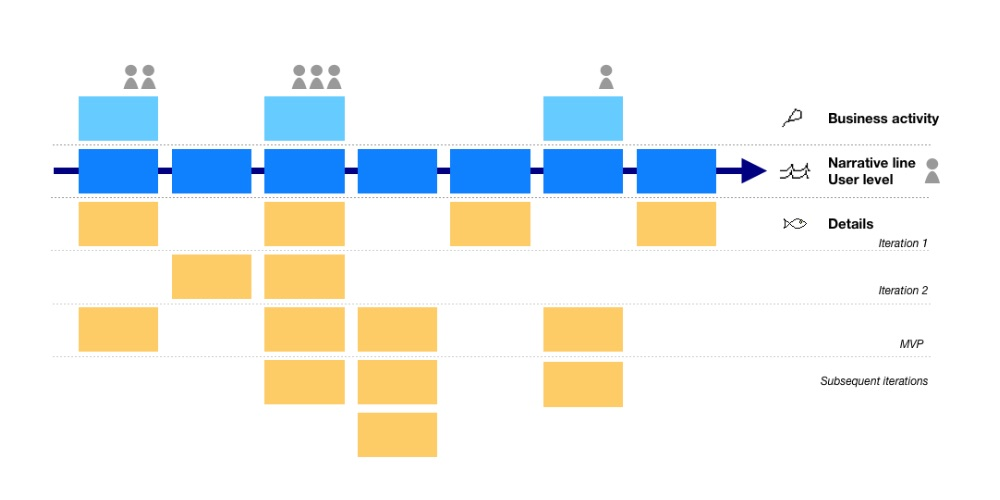

Prioritization of Value over Power
Power of Value
Product-oriented companies exist and grow by generating value to their customers and they are especially good at prioritizing what to ship and where to invest their energy. They collect sufficient enough information to build, measure and learn to pivot their backlog of ideas or requirements.
But one can not observe this in government investments or most of the large enterprise companies. For most of the cases in my country for example; government decisions made to achieve political goals or maintain the status quo, instead of generating more value to increase the overall prosperity of citizens. One can also observe the same type of decision making in large hierarchical enterprises. Decision-makers most of the time are focused on achieving their political goals, not on the customers. Failures mostly being injected into next years budgets as enhancements. Technical debts are the next transformation programs. I believe it is better to manage even countries like a product. Sorry for being over-optimistic and fool.
Here I want to revisit, key prioritization techniques that I used easily and effectively.
RICE Scoring
RICE is an acronym for the four factors - Reach, Impact, Confidence and Effort- we use to evaluate each idea, feature in a project or unordered items in a product backlog etc.
Reach: Number of people impacted by this deliverable. Examples;
- Every customer who uses this feature each quarter will see this change. The reach is 2,000 customers per quarter.
- Transactions per month
- Business process of X department with 10 people will completely change
Impact: Impact of deliverable to its targeted users or affected parties. Commonly a multi-choice scale is used. For example;
- Disrupting : 4
- Massive : 3
- High : 2
- Medium : 1
- Low : 0.5
- Minimal : 0.25
Confidence: Our confidence level on Reach and Impact. Depending on the situation we can be overly enthusiastic, may have access to a limited amount of data. Again commonly a multi-choice scale is used. Example:
- High Confidence: 100%
- Medium Confidence : 80%
- Low Confidence: 50%
- Anything below 50% will be too risky to plan
Effort: Total number of all efforts required to build this deliverable (plan, design, develop, test, validate, monitor etc). Depending on the size of the activity, man/day or man/month used.
RICE = (Reach * Impact * Confidence)/Effort
Useful for creating a SMART metric inside the organization and reduce inherent biases by continuously measure and challenge quantitatively.
Beware of dependencies in other areas that may impact your parameters and keep in mind that these numbers are just estimations.
There are some simplified versions like : Value/Effort, Cost/Benefit/ Impact/Effort etc.
(User) Story Mapping
A user story is ;
An informal, natural language description of features of a software system. They are written from the perspective of an end-user or user of a system, and maybe recorded on index cards, Post-it notes, or digitally in project management software. Depending on the project, user stories may be written by different stakeholders like a client, user, manager, or development team.
Example : As a < role > I can < capability >, so that < receive benefit >
Story mapping for Martin Fowler > “is a technique that provides the big picture that a pile of stories so often misses.”
 From Wikipedia
Useful for focusing on users and understand their expectations simply, especially when in the early stage of product development and efficiently define the scope of MVP by involving the whole team.
Beware of external dependencies, generated business value and complexity of implementation.
Cost of Delay
This technique allows quantifying product backlog in monetary units.
Example:
| Feature Name | Cost Of Delay | Duration | Factor |
|---|---|---|---|
| Feature A | 50K | 5 Weeks | 10 K/Week |
| Feature B | 120K | 6 Weeks | 20 K/Week |
Useful for focusing on the value that matters for the company, helps teams to better understand market conditions, motivates for speed and improves value-driven mindset.
Beware of having different views on the monetary value of features. Using different techniques, collecting more data (competitor analysis, customer interviews etc.) may help to resolve any possible conflicts.
Conclusion
There are many other prioritization techniques. Any of them is better than having none. Other techniques I would like to mention are;
- Weighted Score Matrix Model
- MoSCoW Method
If not enough;
“To succeed, planning alone is insufficient. One must improvise as well.” Isaac Asimov